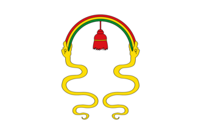
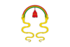
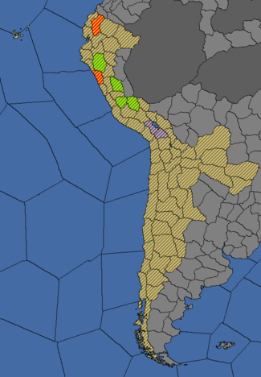

{kind=link}
| 南美北部 |
| 安第斯山区 |
| 南美东部 |
| 南美南部 |
| 前殖民领国家 |
 | |
|---|---|
| 库斯科 | |
| 政府等级 | |
| 主流文化 | |
| 首都 | |
| 政体 | |
| 国教 | |
| 科技组 | |
| 印加 / 库斯科的理念 |
| +20% 陆军上限 −10% 理念花费 |
| +1 最大敌方损耗
|
|
|


库斯科（英文：Cusco）是一个位于南美洲西部安第斯区域的内陆国家。它们接壤北边的  万卡，和南边的
万卡，和南边的  科拉。库斯科是最强大的安第斯国家，因此适合成立
科拉。库斯科是最强大的安第斯国家，因此适合成立  印加和完成太阳神成就。
印加和完成太阳神成就。
另参见：库斯科任务/基础游戏
DLC 变革之风未开启时，库斯科有一个独特但规模很小的任务树，聚焦于征服邻国和潜在的宿敌——
变革之风未开启时，库斯科有一个独特但规模很小的任务树，聚焦于征服邻国和潜在的宿敌——  万卡。
万卡。
DLC 变革之风开启时，库斯科使用新的变革之风任务，在成立印加之后任务树会进一步扩展。
变革之风开启时，库斯科使用新的变革之风任务，在成立印加之后任务树会进一步扩展。
库斯科有几个国家特定的历史事件。[1]
|
|
这条信息可能已不适合当前版本，最后更新于1.29。 |
经过多年的挣扎，甚至曾经差点被昌卡人在1438年彻底打败，库斯科王国已经崛起，进入到它史上最强的时期。拯救了国家的年轻国王帕查库特克随后很快地征服了查卡王国，它曾经在瓦里帝国崩溃后很长一段时期内向包括库斯科在内的许多国家收取贡金
除了作为库斯科帝国史上最强的国王被载入史册，昌卡的衰落给了我们获取他们财富的机会，以及领过和附庸国的贡品。这里还是王国理想的首都，可以购买必要的服务，以及改革扩张我们的国家。在这时，没有人知道帕查库特克的计划，但有一点肯定，他掌握着王国的方向。
触发条件
|
平均发生时间
1 月 |
帕查库特克万岁！他让大地颤抖！
| |
|
|
这条信息可能已不适合当前版本，最后更新于1.29。 |
帕查库特克的第一项日程就是改革库斯科。我们的首都已经履行使命很多年了，但是它很大程度上只是个小村子，经常被周边河流的洪水淹没。这个地方配不上我们帝国的野望。通过规划了一个城市的小模型，$MONARCH$描绘了重新设计城市的蓝图，这将导致城市居民在整个重建过程中疏散开。
项目所需的人力和材料可以在我们新疆界内部自给自足，动员各个地方的附庸酋长需要慷慨的散播大量的礼物和宴席。不过这是新都建设所必须付出的代价。
触发条件
|
只触发于
（请将触发条件移至这里） |
让我们堕旧都，建新都!
还是把资源用在其他上面.
| |
|
|
这条信息可能已不适合当前版本，最后更新于1.29。 |
经过差不多20年的努力，库斯科的重建完工了。土地上建设有大广场和美妙的建筑，近处的河流被引入运河中。
这座城市是为一个大帝国所建，而非一个小小的王国。它被规划为四个区域，和我们划分安第斯区域的划分相对应。王城坐落在四个区域的中心，这种划分延伸到整个帝国。
触发条件
|
平均发生时间
1 月 |
好极了!
| |
|
|
这条信息可能已不适合当前版本，最后更新于1.35。 |
[807.GetName]已被重建，以符合库斯科王国雄心壮志，现在$MONARCH$也需要一个庄严的领地来荣耀他个人和他的宗族。$MONARCH$在一座被乌鲁班巴河环绕的山顶上规划了马丘比丘城，一个专为他的宫廷和帕纳卡的疗养所，同样也是一处符合他地位的美好住处。
| 触发条件 | 平均发生时间
75 月 |
让我们建设这座伟大城市！
不要太奢侈了。
| |
|
|
这条信息可能已不适合当前版本，最后更新于1.36。 |
我们国家一度只是本地诸多邦国中的一个，如今得以将安第斯山脉的全部四大地区纳入掌控。我们的王国成长为一个庞大而强盛的帝国，由众多民族团结而成，由强有力的统治阶级将其统辖。对于治下臣民，我们的唯一身份就是他们的主人——「印加」。
| 潜在需求 | 接受 |
效果
| |
AI决议因子：

对于库斯科来说，最佳的策略就是成立印加然后准备应对西方殖民者的到来。
库斯科和印加都使用  安第斯科技组，而且都是原始国家科技。这将会带来以下惩罚：
安第斯科技组，而且都是原始国家科技。这将会带来以下惩罚：
因蒂崇拜需要完成5项政府改革，同时玩家还需要一个与已经接受封建主义思潮的国家相接壤的核心省份以接纳思潮。
每项改革需要拥有至少 +1 稳定度和100因蒂权威。在改革后，将会在国内3个随机地点出现 篡权者叛军，同时玩家的因蒂权威将会重置0，  稳定度将会 -2。因此玩家应该时刻做好战争准备，将军队士气拉到最高并且激活所有堡垒。
稳定度将会 -2。因此玩家应该时刻做好战争准备，将军队士气拉到最高并且激活所有堡垒。
除了每月的固定增加（增加量取决与国家的总  发展度），玩家亦可以通过事件或者降低省份自治度来获得因蒂权威。在事件中，建议玩家不惜一切代价去选择增加权威最多的选项，即使会出现叛军或者
发展度），玩家亦可以通过事件或者降低省份自治度来获得因蒂权威。在事件中，建议玩家不惜一切代价去选择增加权威最多的选项，即使会出现叛军或者  本地叛乱度增加。另外，提高新征服省份的
本地叛乱度增加。另外，提高新征服省份的  自治度或者出现分离主义都会降低因蒂权威。在某种意义上，玩家可以以同样的方式交换权威和自治度。
自治度或者出现分离主义都会降低因蒂权威。在某种意义上，玩家可以以同样的方式交换权威和自治度。
如果玩家想要完成太阳神成就，那么建议首选“扩张密特马政策”这一改革政策，这会提供一个  殖民者，在欧洲殖民者通常会出现的南美东海岸抢先殖民能够有效阻止其扩张。在这之后，选择军事相关的改革以便应对叛乱和与邻国的战争。
殖民者，在欧洲殖民者通常会出现的南美东海岸抢先殖民能够有效阻止其扩张。在这之后，选择军事相关的改革以便应对叛乱和与邻国的战争。
值得注意的是，尽量保证成功镇压每一次叛乱，因为每次叛乱成功都会减少2点宗教改革进程，这会对改革事业带来巨大的打击，并且会增加  稳定花费以及
稳定花费以及  行政科技花费。
行政科技花费。
自游戏开始时， 安第斯科技组的国家会因为封建主义未接纳而遭受 +50%
安第斯科技组的国家会因为封建主义未接纳而遭受 +50%  科技花费惩罚。随着时间的推进，如果后续的思潮也没有被接纳，每个思潮将会带来 +50% 科技花费惩罚。
科技花费惩罚。随着时间的推进，如果后续的思潮也没有被接纳，每个思潮将会带来 +50% 科技花费惩罚。
更严重的是，玩家所拥有的省份大多数都是山地或者丛林地形，这会带来 +25% 到 +35%  的发展度提升花费。因此，应该慎用君主点数，在和邻国科技持平的情况下要准备足够的点数在改革完成后使用。
的发展度提升花费。因此，应该慎用君主点数，在和邻国科技持平的情况下要准备足够的点数在改革完成后使用。
库斯科或者印加的一些决议会增加  稳定花费（通常是 +5%），直到游戏结束，因此玩家在事件中应该尽可能选取增加稳定的选项。在宗教改革完成前，玩家会至少损失 10
稳定花费（通常是 +5%），直到游戏结束，因此玩家在事件中应该尽可能选取增加稳定的选项。在宗教改革完成前，玩家会至少损失 10  稳定度。
稳定度。
在另一方面，库斯科的一些事件会让玩家得到持续到游戏结束的奖励。玩家应该妥善考虑这些永久增益（+0.5  每年威望上升和 +1
每年威望上升和 +1  每年正统性增加）和立刻获得
每年正统性增加）和立刻获得  稳定度之间该选择哪个。
稳定度之间该选择哪个。
即使科技惩罚很高，但还是建议玩家将  军事科技提高到3级,这样才有与邻国抗衡的资本（邻国通常会将军科提高至5或6级），同时避免开战然后因科技差距而输掉战争。达到5级
军事科技提高到3级,这样才有与邻国抗衡的资本（邻国通常会将军科提高至5或6级），同时避免开战然后因科技差距而输掉战争。达到5级  行政科技也值得考虑，因为这能允许玩家解锁第一个
行政科技也值得考虑，因为这能允许玩家解锁第一个  理念。可以考虑首发探索理念，这样能增加
理念。可以考虑首发探索理念，这样能增加  殖民者和
殖民者和  征服者，财阀理念也值得考虑，这样能够减少因
征服者，财阀理念也值得考虑，这样能够减少因  金矿带来的
金矿带来的 通货膨胀增加。
通货膨胀增加。
虽然库斯科拥有一个理想的开局位置，但是她也并没有能够让玩家马上就横扫邻国的实力。同时，建议玩家将注意力放在南部诸国，同时仅有的其他金矿在  科拉和
科拉和  帕卡赫斯手上,而且这两国通常会互相宿敌。玩家可以拉上盟友或者许诺土地（但不要真的给盟友土地，毕竟盟友就是拿来利用的），这样就能够轻松在10年内攻占南部地区。在北方，同盟会更加紧密，尤其是在对抗
帕卡赫斯手上,而且这两国通常会互相宿敌。玩家可以拉上盟友或者许诺土地（但不要真的给盟友土地，毕竟盟友就是拿来利用的），这样就能够轻松在10年内攻占南部地区。在北方，同盟会更加紧密，尤其是在对抗  万卡时非常有效，
万卡时非常有效， 依其马和
依其马和  胡伊拉会很容易就接受玩家的盟约，但是到最后这些盟友都要被玩家吞并或者变成附庸国。除了
胡伊拉会很容易就接受玩家的盟约，但是到最后这些盟友都要被玩家吞并或者变成附庸国。除了  基多，其他邻国都能够在100%战争分数的前提下被完全吞并。不过，任务提供给
基多，其他邻国都能够在100%战争分数的前提下被完全吞并。不过，任务提供给  库斯科的宣称权只有
库斯科的宣称权只有  万卡的省份，玩家只能通过建立间谍网伪造宣称然后寻找宣战的时机，同时间谍行动将会带来侵扩惩罚和围城速度增加。
万卡的省份，玩家只能通过建立间谍网伪造宣称然后寻找宣战的时机，同时间谍行动将会带来侵扩惩罚和围城速度增加。
在满足了所有成立  印加的条件后,建议玩家尽早成立，这样就会尽早享受
印加的条件后,建议玩家尽早成立，这样就会尽早享受  帝国等级带来的增益。
帝国等级带来的增益。
尽早吞并  穆伊斯卡，玩家需要先殖民一个省份以便与之接壤，然后再伪造宣称即可。
穆伊斯卡，玩家需要先殖民一个省份以便与之接壤，然后再伪造宣称即可。
由于在库斯科所处的地区并没有什么需要立刻攻占的目标，而且南美洲与世隔绝，玩家只需要在欧洲殖民者到来之前专注于在本地扩张并且提高自己的发展度。玩家也可以试着提高每年的威望上升，当完成扩张后，每年大约可以获得5至7点的威望。
|
|
只适用于DLC天命激活时。 |
玩家可以将间谍网和  地理大发现时代的奖励“转移目标”相结合，这样就可以快速和相接壤的邻国宣战了。
地理大发现时代的奖励“转移目标”相结合，这样就可以快速和相接壤的邻国宣战了。
玩家的首选殖民目标建议是与  穆伊斯卡相接壤的地区，位于Nieva的南部。在此之后，玩家就要将重心放在对南美东海岸的殖民上，首先可以殖民的地区位于巴西地区，然后拉普拉塔和哥伦比亚地区也可以殖民了。
穆伊斯卡相接壤的地区，位于Nieva的南部。在此之后，玩家就要将重心放在对南美东海岸的殖民上，首先可以殖民的地区位于巴西地区，然后拉普拉塔和哥伦比亚地区也可以殖民了。
值得注意的是，在没有足够高的  外交科技或者
外交科技或者  探索理念或者扩张理念，殖民地的
探索理念或者扩张理念，殖民地的  每月定居者增加只会保持在最低值 +10，而且
每月定居者增加只会保持在最低值 +10，而且  热带气候将会带来 -10 的惩罚。因此，殖民只能靠运气了：例如
热带气候将会带来 -10 的惩罚。因此，殖民只能靠运气了：例如  殖民者带来的概率
殖民者带来的概率  同化当地土著，或者是统治者拥有
同化当地土著，或者是统治者拥有  志在四海特质。
志在四海特质。
在前期，可能会出现与首都库斯科发展相关的事件。这些事件将会带来立刻的增益，并且一直持续到游戏结束。 正统性只在玩家想要转为
正统性只在玩家想要转为  君主制时才有用，这需要一个是君主制的邻国。但是，在能够改变政府形式时，印加或者库斯科的邻国将会是欧洲的殖民国家，而她们往往是
君主制时才有用，这需要一个是君主制的邻国。但是，在能够改变政府形式时，印加或者库斯科的邻国将会是欧洲的殖民国家，而她们往往是  共和国。在改变政府形式时，玩家应妥善考虑，可以通过国内灾难或者革命推翻共和国变为专制君主制。
共和国。在改变政府形式时，玩家应妥善考虑，可以通过国内灾难或者革命推翻共和国变为专制君主制。
另外，在事件中大可不必选择“支持封建主义”，一旦库斯科完成了宗教改革就会自动接纳封建主义思潮，玩家可以在事件中选择更优的选项。


| 南美北部 |
| 安第斯山区 |
| 南美东部 |
| 南美南部 |
| 前殖民领国家 |
| 北非 | 创建缩略图出错：文件丢失 得土安 创建缩略图出错：文件丢失 塞拉 |
| 东非 |
| 中非 |
| 东南非 |
| 西非 |
| 西南非 |
| 近东 |
| 波斯及中亚 |
| 北亚 |
| 东亚 |
| 东南亚 |
| 印度 |
| 伊比利亚 |
| 法兰西 |
| 低地 |
| 不列颠 |
| 北欧及波罗的 |
| 中欧 |
| 北德意志 |
| 南德意志 |
| 意大利 |
| 巴尔干及安纳托利亚 | 创建缩略图出错：文件丢失 罗姆 |
| 东欧 |
| 中美洲 |
| 墨西哥 | 创建缩略图出错：文件丢失 普雷佩查 |
| 北美东北 |
| 北美东南 |
| 北美中西部 |
| 部落联盟国家 |
| 前殖民领国家 | |
| 海盗共和国 |
| 澳大利亚 |
| 南太平洋 |
| 北太平洋 |
| 前殖民领国家 |